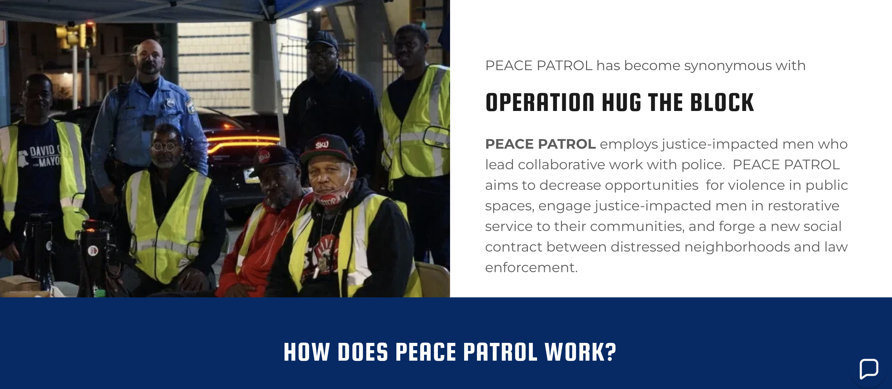
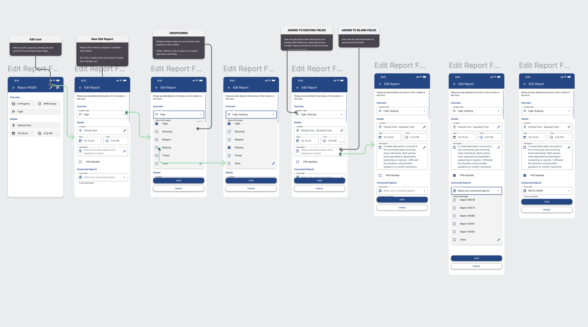

Philly
Truce
Lead Product Strategy for mobile app and feature enhancements at Philly Truce, developing an
incident-management platform to document and mitigate violent conflicts in and around
Philadelphia schools
Product Strategy, Product Design
User Research, Usability Testing
1. Problem:
What did I set out to
solve?
#
Inefficient Incident Documentation: Safe Path Monitors and Patrollers were using
paper-based
reports to document incidents, making data utilization difficult and time-consuming.
#
Lack of Effective Incident Management: The increasing number of incidents encountered
by Safe
Path personnel highlighted the need for a more streamlined and efficient management system.
#
Poor Resource Use and Community Involvementpeace: Without a digital system, it was
hard to
deploy
personnel effectively and involve the community in reducing violence.
--> Read Product
Requirements Document

2. User Reserach:
What methods did I use to
research
users?
# The Philly Truce UX and Product teams aimed to test the core Reporting features with real
users using our prototypes.
# User research, including surveys, interviews, and user testing, helped assess these features
based
on the 5 E's: efficiency, effectiveness, engagement, error tolerance, and ease of learning.
--> Read Usabilty
Round 1 Report

3. Final Protoypes
(Ready for Dev)
# Feature Prioritization: Reporting
# A centralized view displaying a list of
unclaimed, claimed and closed
incidents with key details for quick reference and prioritization. Following this, the Safe Path
personnel (Safe Path Monitors and Safe Path Patrollers) will receive an alert on their end regarding
a new, unclaimed report. Safe Path personnel will be able to view a report, claim a report,
create a new report and edit a report.
4. Result
# Product team assisted UX team in finalizing MVP features with a focus on Reporting.
# Overall, we received positive feedback from users, an average sub-task success
rate of 80%, and errors were not too severe
# Qualitative Feedback: Users found the tool valuable for stopping violence in Philadelphia,
praised its ease of use, potential to replace paper reporting, ability to foster community, and
provision of sufficient incident information.
5. How did I have an
impact?
# Close collaboration with the Product and UX team to shape the roadmap effectively
# Prioirtizing Reporting features for MVP functionality
# Recruiting users and conducting in-depth usability testing to assess app efficiency
# Gained proficiency in product strategy, usability testing, and UI/UX design